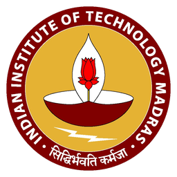

Faculty-built content from top institutions
Courses are designed and delivered by faculty from IIT Madras, IIT Kanpur, IIT Gandhinagar, IISER Tirupati, NALSAR Hyderabad, SPA Vijayawada and other leading institutions.

Partner school · IIT Madras School ConnectOur learners in Middle and Higher Grades can now take expert-built, 8-week career exploration certificate courses from IIT Madras and other top Indian institutions — online, alongside their regular school work, with an e-certificate from CODE, IIT Madras on successful completion.
Studying at another school? Register with us for School Connect →
School Connect is a flagship outreach initiative of the Centre for Outreach and Digital Education (CODE) at IIT Madras. It exists to close the gap between school education and higher education — giving school students a real, hands-on taste of emerging fields before they choose their streams, degrees and careers.
Our learners already build projects, run ventures and learn with AI tools. What they need next is informed career direction: a way to test-drive a field with faculty from India's leading institutions, before committing years to it.
Through this partnership, our students enrol in the same certificate courses that IIT Madras opens to its partner schools across India — taught by IIT Madras and partner-institute faculty, in a format designed to sit beside regular school studies rather than compete with them.
In one line: the IIT Madras School Connect Program lets a Class IX–XII student try a career field seriously — in 8 weeks, online — and finish with an e-certificate from CODE, IIT Madras.
This is not extra tuitions. It is a low-risk, structured way for a teenager to find out what a field really feels like — and to hold an external credential that proves they chose to explore it.
Courses are designed and delivered by faculty from IIT Madras, IIT Kanpur, IIT Gandhinagar, IISER Tirupati, NALSAR Hyderabad, SPA Vijayawada and other leading institutions.
A learner can test Data Science, Aerospace, Law, Design, Forensic Science or Architecture before picking Class XI subjects or a degree — instead of guessing.
Students who complete the assignments and assessment receive an official e-certificate from CODE, IIT Madras. It is awarded by IIT Madras, not by our school.
About an hour of recorded content per week, one live session (usually Saturday), biweekly assignments with a two-week window, and four batch options a year.
Hash Future School has nominated a teacher as the SPOC (Single Point of Contact) for the programme, so enrolment, payments and course access are coordinated through us.
Our learners already produce portfolios, projects and ventures. An IIT Madras certificate adds recognised subject depth to that record.
Enrolment happens through the school, because IIT Madras only admits students from partner schools. Here is the full route.
Hash Future School completed the Expression of Interest form, nominated a teacher as SPOC, and is listed in the IIT Madras partner directory. Already done.
The learner picks a single course for that batch. IIT Madras allows one course per student per batch run, so a later batch can be used for a second field.
We register the student before the batch deadline and collect the course fee from interested students, then remit it to IIT Madras in bulk.
Recorded lectures release every Monday, a live interactive session runs each week (usually Saturday), and a discussion forum plus biweekly assignments keep the learner moving.
The learner completes a computer-based assessment. On satisfying the course requirements, CODE, IIT Madras issues the e-certificate.
IIT Madras enrols School Connect students only through a partner school. If your child studies somewhere else — a school in Dubai, Abu Dhabi, Riyadh, Jeddah, Muscat, Doha, Kuwait, Bahrain, or anywhere in India or the world — you can register with Hash Future School and take the IIT Madras course as our student.
Your child stays at their own school. This is not a school transfer or an admission to Hash Future School — it is a registration with us that unlocks the IIT Madras programme, while everything else about their schooling stays exactly as it is.
Student details, contact details, the present school, class, identification, parents' details and a little about what the student is into.
Our team checks the class and eligibility, and gets in touch if anything needs clarifying. Usually within a few working days.
The student and the parents receive the school ID and the enrolment steps by email — that ID is what lets the learner enrol as a Hash Future School student.
Our School Connect coordinator completes the enrolment with IIT Madras, and the learner joins the batch: recorded lectures every Monday, a live session each week, assignments, assessment — then the e-certificate from CODE, IIT Madras.
Please register with the email address that the family actually reads — the approval email, the Hash Future School ID and the course details all arrive there. Open the registration form.
Twenty introductory certificate courses are published on the official School Connect portal, each assessed over 8 weeks and open to Class IX–XII students of partner schools. Some courses carry pre-requisites — we check eligibility subject by subject before registering.
Work with data, build smart ideas and create projects.
Foundational knowledge of electronic components and circuits.
Discover what a career in architecture or design really involves.
Explore engineering and manipulating living systems.
Modern computing's core ideas and the principles behind daily systems.
Constitutional, criminal, contract, tort and cyber law concepts.
Logic, puzzles and strategy — pure playful thinking.
Aerodynamics and the forces of flight, with hands-on projects.
Ecology and evolution, genetics and bioacoustics in biodiversity.
How culture, media and technology shape us — and the careers that follow.
Basic principles and fundamentals of chemical engineering.
Money, markets, risk and the digital economy in everyday life.
Senses, AI, gestures, voice and XR — how humans and machines interact in play.
Industrial design as human-centred, problem-solving work.
Molecular aspects of materials and their real-world applications.
Passwords, cryptography, internet fundamentals and cyber threats.
Digital methods, AI ethics, storytelling and cultural analysis. No coding required.
How engineers design safe and sustainable infrastructure for society.
Fingerprints, DNA, handwriting and digital evidence for Classes IX & X.
Career pathways, subject requirements and a roadmap for Classes XI & XII.
Course list as published by IIT Madras on 25 September 2026. Check the live course list and eligibility — IIT Madras adds, updates and retires courses.
IIT Madras runs four School Connect batches each year. Registration closes before each batch starts, and the current window is the October 2026 batch.
| Batch | Registration | Course runs | Final exam | Status |
|---|---|---|---|---|
| Batch 3 — Aug 2026 | 15 Jun – 24 Jul 2026 | 3 Aug – 25 Sep 2026 | 11 Oct 2026 | In progress |
| Batch 4 — Oct 2026 | 24 Aug – 30 Sep 2026 | 5 Oct – 27 Nov 2026 | 13 Dec 2026 | Registration open |
| Batch 1 — Jan 2027 | 23 Nov 2026 – 8 Jan 2027 | 11 Jan – 6 Mar 2027 | 21 Mar 2027 | Upcoming |
| Batch 2 — Apr 2027 | 22 Feb – 30 Mar 2027 | 5 Apr – 29 May 2027 | 13 Jun 2027 | Upcoming |
Swipe the table sideways to see the course dates and exam dates.
Closing soon
If your child wants to start this term, message us now and we will confirm eligibility and complete the school-side registration before the deadline.
Dates are set by IIT Madras and come from its published academic calendar. View the official academic calendar for the current schedule.
We would rather you knew the limits of this programme up front — it is an enrichment and career-exploration credential, not a school-leaving certificate.
Our learners are encouraged to test ideas early. An 8-week IIT Madras course is the structured version of that instinct: try Aeronautics or Law properly, then decide whether to build towards it.
Project work builds breadth and confidence. Faculty-led certificate courses add academic depth, terminology and assessment discipline in a specific discipline.
Skills portfolios are strongest when someone outside the school has assessed the work. That is exactly what CODE, IIT Madras does here.
Yes. Hash Future School (Ernakulam, Kerala) appears in the official IIT Madras School Connect partner directory, with the partnership recorded in September 2026. The programme is run by the Centre for Outreach and Digital Education (CODE) at IIT Madras.
Learners of Hash Future School currently in the Middle and Higher Grades, and other eligible students of other schools who register with us. IIT Madras runs this programme only for students of partner schools, so enrolment happens through our nominated teacher contact (SPOC).
For students, IIT Madras charges a nominal course fee per course, which can be directly remitted by the students with IIT Madras. IIT Madras sets and revises it.
Neither. It is a course completion e-certificate issued by CODE, IIT Madras for an 8-week introductory certificate course. It is a career exploration and enrichment credential, and it does not replace a board certificate or a degree.
Roughly an hour of recorded lecture content released every Monday, one live interactive session each week (usually Saturday), biweekly assignments with a two-week submission window, and a computer-based assessment at the end of the course.
One course per batch run. With four batches a year, a learner can take a different course in a later batch.
No. It runs alongside it. We continue to prepare learners for their chosen board pathway, and the IIT Madras course adds faculty-led subject exposure and an external certificate to the learner's record.
Yes. IIT Madras enrols students only through a partner school, so you register with Hash Future School and your child takes the course as our student while continuing at their own school. Start the registration here.
Yes. IIT Madras enrols students only through a partner school, so you register with Hash Future School and your child takes the course as our student while continuing at their own school. Start the registration here.
No. It is a registration for the IIT Madras programme only. Your child stays enrolled at the present school and continues with its curriculum, teachers and exams. Nothing about their schooling changes.
Our team reviews the registration, checks the class and School Connect eligibility, and usually responds within a few working days. On approval we email the Hash Future School student ID to the student and the parents, along with the enrolment steps. Then our School Connect coordinator completes the IIT Madras enrolment for that batch.
The student's name, date of birth, age and nationality; student email and phone or WhatsApp; the present school's name, city, country, class and curriculum; one identification document (passport, Emirates ID, Iqama, QID, CPR, Civil ID or Aadhaar) and its number; and a parent or guardian's name, email, phone and profession.
Every programme fact on this page was verified against the official IIT Madras School Connect website on 25 September 2026. Contents, dates, fees and certificates may change, and IIT Madras is the authority on all of them.
Tell us the class your child is in and the field they are curious about. We will check course eligibility, confirm the batch deadline and guide the registration.
Not a Hash Future School family yet? Book a free demo and see how we learn.